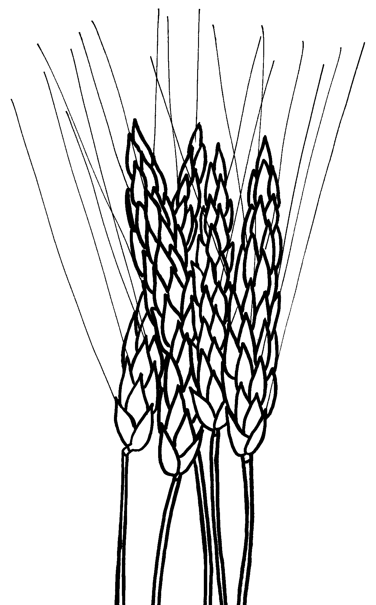

Read the lessons at the Vanderbilt Library website: http://divinity.lib.vanderbilt.edu/lectionary/BPentecost/bProper25.htm
Read
the lessons at the Vanderbilt Library website:
http://divinity.lib.vanderbilt.edu/lectionary/BPentecost/bProper25.htm
Elementary School Pew-work
|
Unscramble the bold words: 1It
seemed like a dream __________ |
 |
Why do you think Bartimaeus was sitting by the road?
_____________________________________________________________________________
Why do you think Bartimaeus called Jesus "Son of David?"
_____________________________________________________________________________
What is interesting about the question Jesus asks Bartimaeus?
_____________________________________________________________________________
What does Bartimaeus do when he discovers he can see?
_____________________________________________________________________________
|
G O F A I T H M A M F |
IMMEDIATELY REGAINED FOLLOWED TEACHER SIGHT JESUS FAITH BLIND AGAIN YOUR WHAT WELL WANT THEN SAID NRSV MARK MADE WAY SEE MAN LET HIS HIM HAS FOR AND TO ON MY GO DO |
(Mark 10:51-52) Then Jesus said to him, "What do you want me to do for you?" The blind man said to him, "My teacher, let me see again." {52} Jesus said to him, "Go; your faith has made you well." Immediately he regained his sight and followed him on the way. (NRSV) |